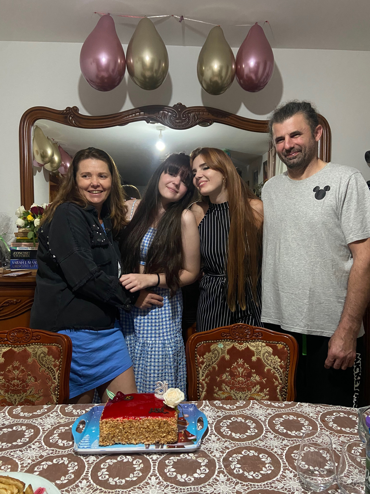

Meet our Chef!
Our chef, Cami, is a culinary virtuoso with a rich background in the art
of cooking, having honed her skills in the culinary capitals of Italy
and France. With an extensive culinary journey spanning both countries,
she has imbibed the essence of European cuisine, from the rustic charm
of Italian trattorias to the exquisite finesse of French patisseries.
But what truly sets our chef apart is her deep-seated
passion for the culinary arts. For her, cooking is not just a
profession; it's a labor of love that she shares with her husband and
two delightful daughters. She finds joy in creating flavors that bring
people together, savoring the warmth of a shared meal and the laughter
that accompanies it.
Today, she embarks on an exciting new
chapter in her culinary journey by fulfilling a long-held dream: opening
her very own pastry shop. With her dedication, experience, and the love
and support of her family, she is ready to craft delectable pastries
that will delight your taste buds and create cherished moments. Join us
in welcoming our chef as she embarks on this exciting venture, and
together, let's savor the sweetness of what lies ahead.